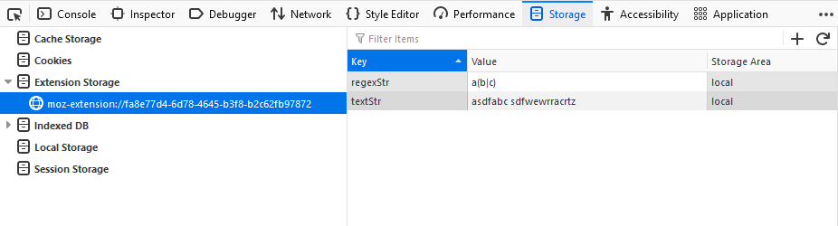

This storage type is only shown when debugging extensions. When selecting an extension ID in the storage tree of the Storage Inspector, a table lists the details of all the extension storage present for the extension. This table contains the following columns:
